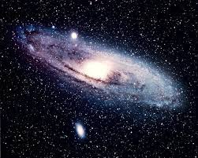

Guia das galáxoas

Galáxia de Anderomeda
Descrição
A galáxia de Andrômeda (Messier 31, NGC 224) é uma galáxia espiral
localizada a cerca de 2,54 milhões de anos-luz de distância da Terra, na
direção da constelação de Andrômeda.
Dados interessantes
- Além da Via Láctea, é a galáxia mais estudada
-
Suas duas galáxias satélite, Messier 32 e Messier 110, são visíveis em
binóculos
- Sua distância em relação à Terra ainda não foi bem definida
Outras galáxias:
Olho Negro,
Pequena Nuvem de Magalhaes